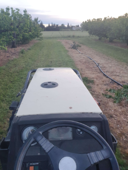

J'ai commencé mon parcours scolaire au lycée Dhuoda à Nîmes, où j'ai suivi un baccalauréat spécialisé en
mathématiques et numérique et science de l'informatique (NSI). Suite à l'obtention de mon diplôme, j'ai
poursuivi mes études à l'IUT de Montpellier. Au cours de la première année, j'ai acquis de solides
compétences
en développement web, programmation et gestion de projets.
Actuellement en 2ᵉ année de BUT Informatique à l'IUT de Montpellier, j'ai choisi le parcours déploiement
d'application communicante et sécurisée. Ce choix s'explique par mon souhait de me spécialiser dans tout ce
qui
touche à la sécurité informatique et aux communications entre les applications, estimant que ce parcours est
le
plus adapté à mes attentes.
Issu du monde agricole et ayant grandi au sein d'une exploitation fruitière, j'ai développé un sens du travail acharné et une soif d'apprendre constante.
Mon parcours m'a permis d'acquérir de solides compétences en programmation et développement web, ainsi qu'une excellente capacité à travailler en équipe. Toujours désireux d'élargir mes connaissances et compétences, je suis à la recherche de nouvelles opportunités pour continuer à apprendre et à contribuer au succès des projets sur lesquels je travaille.
J'ai développé une forte persévérance et combativité tout au long de mes expériences. Par exemple, lors de l'implémentation compliquée d'une fonctionnalité dans un projet, je ne m'arrête pas tant que je n'ai pas fini de l'implémenter ou avant d'avoir atteint mon objectif.
Je suis également conscient de ma puissance de travail et de mon sens de l'effort. Lors d'un projet où je manquais de certaines connaissances dans un domaine, j'ai passé toute une soirée à me documenter pour combler ces lacunes.
En grandissant et en prenant de la maturité, j'ai constaté une évolution de mes traits de personnalité. Je travaille activement à améliorer ma capacité à m'exprimer à l'oral, et je compense cette difficulté en participant souvent lors des discussions, ce qui montre mon implication et mon enthousiasme.
Mes centres d'intérêts sont variés et reflètent ma personnalité éclectique.
Je suis un fervent supporter de rugby et suis toujours prêt à encourager le MHR lors de leurs matchs.
L'informatique, qui a également suscité ma
passion depuis le lycée, occupe une place importante dans ma vie quotidienne. En outre, je suis un
amateur
de
cinéma et apprécie tant les films classiques que les productions récentes. Les LEGO, qui ont stimulé mon
imagination et ma créativité depuis mon enfance, continuent de me fasciner. Enfin, l'histoire est un
domaine
qui
m'attire particulièrement, car elle me permet de comprendre les racines de notre société et d'élargir
mes
horizons culturels.
Pour consulter mon CV, vous pouvez le télécharger en cliquant sur ce bouton :